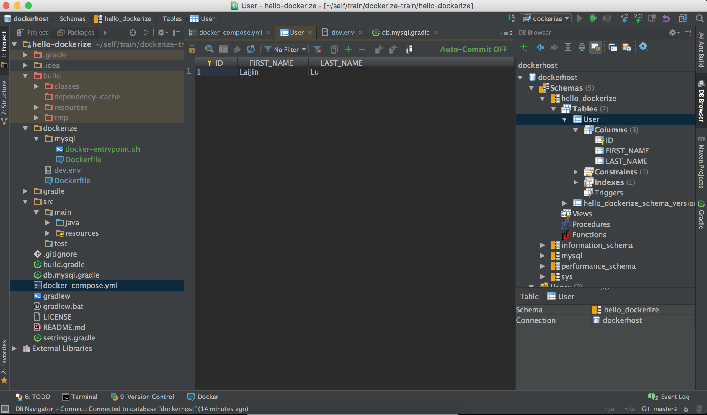

上一篇容器化开发环境 - 数据库连接和迁移分享了关于如何给容器中的应用创建数据库连接，接下来将分享一下如何将数据库从应用容器中分离出来。
为什么要进行分离？当应用和数据库在同一个容器中运行时，也就意味着，应用和数据库的生命周期捆绑在了一起，应用和数据库的运行就会出现相互干扰现象，应用的异常将有可能导致容器的停止，同时也将导致数据库的关闭。更主要的原因是，很多时候需要多个容器中的应用连接一个数据库，为了保证容器之间的运行相互独立，相互不影响，就有必要将数据库隔离在独立的容器中运行，让数据库和容器独处二人世界，同时保证数据库的生命周期不在受其它应用影响。
Setup Codebase
- clone
hello-dockerierepo1$ git clone https://github.com/aikin/hello-dockerize.git
Separate MySQL Dockerfile
- 在
dockerize目录下创建mysql/Dockerfle 修改
mysql/Dockerfile，配置安装MySQL脚本：12345678910111213141516171819202122232425262728293031323334353637383940414243444546FROM ubuntu:14.04RUN apt-get update# === Install Mysql ===RUN groupadd -r mysql && useradd -r -g mysql mysqlRUN mkdir /docker-entrypoint-initdb.dENV MYSQL_MAJOR 5.7ENV MYSQL_VERSION 5.7.11-1ubuntu14.04# gpg: key 5072E1F5: public key "MySQL Release Engineering <mysql-build@oss.oracle.com>" importedRUN apt-key adv --keyserver ha.pool.sks-keyservers.net --recv-keys A4A9406876FCBD3C456770C88C718D3B5072E1F5RUN echo "deb http://repo.mysql.com/apt/ubuntu/ trusty mysql-${MYSQL_MAJOR}" > /etc/apt/sources.list.d/mysql.list# the "/var/lib/mysql" stuff here is because the mysql-server postinst doesn't have an explicit way to disable the mysql_install_db codepath besides having a database already "configured" (ie, stuff in /var/lib/mysql/mysql)# also, we set debconf keys to make APT a little quieterRUN { \echo mysql-community-server mysql-community-server/data-dir select ''; \echo mysql-community-server mysql-community-server/root-pass password ''; \echo mysql-community-server mysql-community-server/re-root-pass password ''; \echo mysql-community-server mysql-community-server/remove-test-db select false; \} | debconf-set-selectionsRUN apt-get update && apt-get install -y mysql-server="${MYSQL_VERSION}"RUN rm -rf /var/lib/apt/lists/*RUN rm -rf /var/lib/mysql && mkdir -p /var/lib/mysql# comment out a few problematic configuration values# don't reverse lookup hostnames, they are usually another containerRUN sed -Ei 's/^(bind-address|log)/#&/' /etc/mysql/my.cnf \&& echo 'skip-host-cache\nskip-name-resolve' | awk '{ print } $1 == "[mysqld]" && c == 0 { c = 1; system("cat") }' /etc/mysql/my.cnf > /tmp/my.cnf \&& mv /tmp/my.cnf /etc/mysql/my.cnfVOLUME /var/lib/mysqlCOPY docker-entrypoint.sh /usr/local/bin/RUN chmod +x /usr/local/bin/docker-entrypoint.shRUN ln -s usr/local/bin/docker-entrypoint.sh /entrypoint.sh # backwards compatENTRYPOINT ["docker-entrypoint.sh"]EXPOSE 3306CMD ["mysqld"]修改dockerize/Dockerfile，移除安装
MySQL的配置：12345678910111213141516171819202122232425262728293031323334353637383940414243444546FROM ubuntu:14.04RUN apt-get updateENV VERSION 8ENV UPDATE 66ENV BUILD 17ENV JAVA_HOME /usr/lib/jvm/java-${VERSION}-oracleENV JRE_HOME ${JAVA_HOME}/jreRUN apt-get install ca-certificates curl \gcc libc6-dev libssl-dev make \-y --no-install-recommendsRUN curl --silent --location --retry 3 --cacert /etc/ssl/certs/GeoTrust_Global_CA.pem \--header "Cookie: oraclelicense=accept-securebackup-cookie;" \http://download.oracle.com/otn-pub/java/jdk/"${VERSION}"u"${UPDATE}"-b"${BUILD}"/server-jre-"${VERSION}"u"${UPDATE}"-linux-x64.tar.gz \| tar xz -C /tmpRUN mkdir -p /usr/lib/jvm && mv /tmp/jdk1.${VERSION}.0_${UPDATE} "${JAVA_HOME}"RUN apt-get install -y opensslRUN apt-get remove --purge --auto-remove -y \gcc \libc6-dev \libssl-dev \makeRUN apt-get autoclean && apt-get --purge -y autoremoveRUN rm -rf /var/lib/apt/lists/* /tmp/* /var/tmp/*RUN update-alternatives --install "/usr/bin/java" "java" "${JRE_HOME}/bin/java" 1 && \update-alternatives --install "/usr/bin/javac" "javac" "${JAVA_HOME}/bin/javac" 1 && \update-alternatives --set java "${JRE_HOME}/bin/java" && \update-alternatives --set javac "${JAVA_HOME}/bin/javac"WORKDIR /hello-dockerizeEXPOSE 8080EXPOSE 5005CMD ["bash"]将
dockerize/docker-entrypoint.sh移动到dockerize/mysql目录下
Startup
-
123456789101112131415161718192021web:build: ./dockerizeenvironment:- LANG=C.UTF-8- TERM=xterm- DEBUG=truelinks:- mysql:mysqlports:- "8080:8080"- "5005:5005"volumes:- .:/hello-dockerizemysql:build: ./dockerize/mysqlenv_file: ./dockerize/dev.envports:- "3306:3306"volumes:- /var/lib/mysql:/var/lib/mysql
启动容器：
1$ docker-compose up查看容器
12345678$ docker-compse ps######Name Command State Ports---------------------------------------------------------------------------------------------------------------hellodockerize_mysql_1 docker-entrypoint.sh mysqld Up 0.0.0.0:3306->3306/tcphellodockerize_web_run_1 bash Up 0.0.0.0:5005->5005/tcp, 0.0.0.0:8080->8080/tcp######执行 migrate 命令:
1root@6485a7a48988:/hello-dockerize# ./gradlew flywayClean flywayInit flywayMigrate
Check Migrate Result On Intellij IDEA
- 查看 User 表
